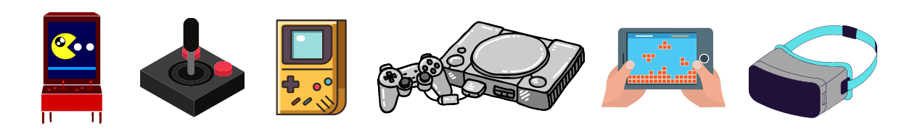

Jeux Vidéos

Un jeu vidéo est un jeu électronique doté d'une interface
utilisateur permettant une interaction humaine ludique en générant
un retour visuel sur un dispositif vidéo. Le joueur de jeu vidéo
dispose de périphériques pour agir sur le jeu et percevoir les
conséquences de ses actes sur un environnement virtuel. Le mot «
vidéo » dans le jeu vidéo fait traditionnellement référence à un
dispositif d'affichage de trame, mais, à la suite de la
vulgarisation du terme, il implique désormais tout type de
dispositif d'affichage.